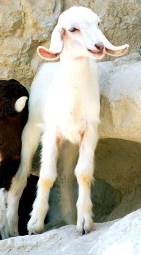
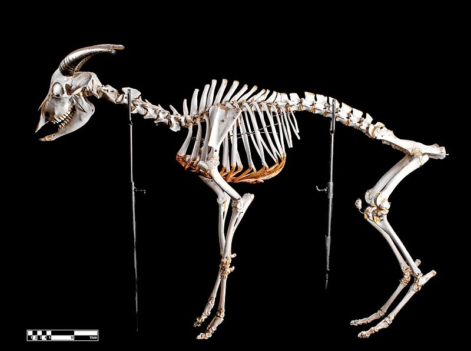
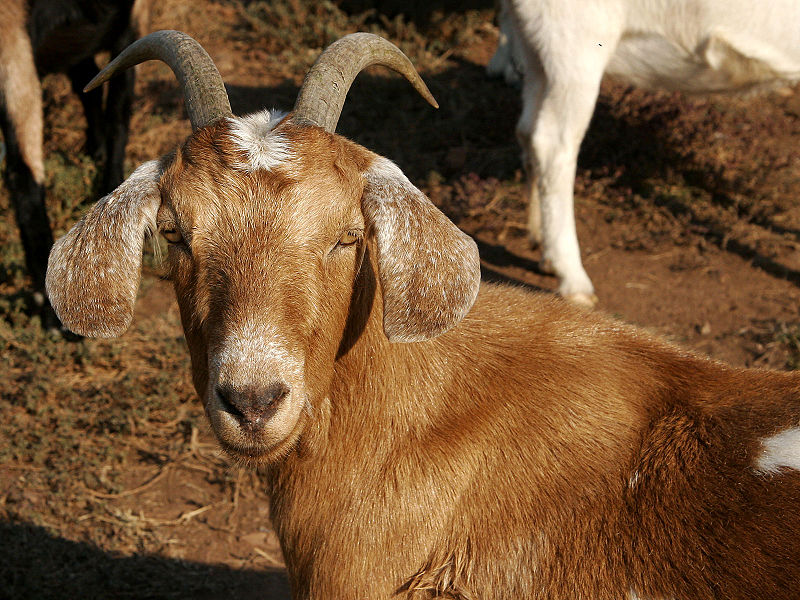

- Étymologie et évolution de l'appellation
- Origine et domestication
- Caractéristiques
Les termes chèvre, Capra et caprin dérivent du latin capra (chèvre) et caprinus (adj. relatif à la chèvre, caprin). L'épithète spécifique dérive du latin hircus, nom désignant le bouc. "Bouc" proviendrait du Gaulois bucco auquel pourrait aussi être rattaché les mots de langues régionales désignant la chèvre : bique et bezie.
On a donné aux caprins domestiques le nom scientifique de Capra hircus au XVIIIe siècle, avant le développement de la biologie de l'évolution. Cette dernière a mis en lumière l'étroite relation existant entre les races domestiques et sauvages. Dans ce contexte, le statut scientifique des « espèces » domestiques a été remis en cause, et beaucoup de biologistes ne les considèrent plus désormais que comme des formes domestiquées des espèces sauvages originelles.
Une espèce est en effet constituée de « groupes de populations naturelles, effectivement ou potentiellement interfécondes, qui sont génétiquement isolées d'autres groupes similaires ».
Or, les « espèces » domestiques se croisent avec leur espèce parente quand elles en ont l'occasion. « Vu que, du moins en ce qui concerne les races d'animaux domestiques primitives, celles-ci constitueraient, en règle générale, une entité de reproduction avec leur espèce ancestrale, si elles en avaient la possibilité, la classification d'animaux domestiques en tant qu'espèces propres n'est pas acceptable. C'est pourquoi on a essayé de les définir comme sous-espèces ».
On donne alors à la nouvelle sous-espèce le nom de l'espèce d'origine, complété par le nom de sous-espèce (qui reprend l'ancienne épithète spécifique) et depuis 1960 environ, on utilise de plus en plus la désignation "forma", abrégée "f", qui exprime clairement qu'il s'agit d'une forme d'animal domestique qui peut éventuellement remonter jusqu'à diverses sous-espèces sauvages : Capra aegagrus.
La chèvre a été domestiquée dès le début du Néolithique (environ dix mille ans av. J.-C.), vraisemblablement d'abord pour son lait, puis pour sa laine, sa viande, sa peau et son cuir.
La chèvre (Capra aegagrus) semble avoir été domestiquée une première fois il y a environ 10 000 ans (fin de la dernière glaciation) dans les monts Zagros et sur les plateaux d'Iran. L'autre centre de domestication connu, le plus important quantitativement, est l'Est de l'Anatolie (Turquie).
La Bible mentionne, dans le livre de la Genèse, que Rébecca prépare à son mari Isaac deux chevreaux pour qu'Isaac bénisse Jacob.
Les analyses génétiques d'ADN fossile laissent penser que les hommes ont d'abord protégé des populations de chèvres sauvages en tuant leurs prédateurs. Puis les tribus ont commencé à les élever pour avoir plus facilement sous la main du lait conservé sous forme de fromage, des poils, de la viande et des peaux. Les chèvres domestiques étaient généralement gardées dans des troupeaux qui se déplaçaient sur les collines ou sur d'autres domaines de pâturage analogues.
Les chevriers qui les soignaient étaient souvent des enfants ou des adolescents, pareils à l'image que nous nous faisons du berger. Ces méthodes de garde se rencontrent encore aujourd'hui.
La domestication des chèvres a probablement engendré des modifications significatives des paysages et des écosystèmes (recul des zones arborées au profit des buissons et « maquis »).
La peau de chèvre est utilisée pour le transport de l'eau, du lait caillé ou du vin. Historiquement, elle servait aussi à produire le parchemin, qui était le support le plus employé pour écrire en Europe jusqu'à l'invention de l'imprimerie et la vulgarisation du papier.

|
 |

|
La chèvre est un animal d'assez petite taille, à cornes arquées ou sans corne, très agile, particulièrement adapté au saut. Sa température interne normale est assez élevée (de 38 à 39,5 °C). On la trouve dans toutes les régions du globe, particulièrement en montagne. Les mâles sont appelés boucs et les petits sont des chevreaux ou chevrettes (parfois encore appelés cabris).
Les yeux de la chèvre ont une particularité, leur pupille est rectangulaire et horizontale, ce qui lui donne un regard étrange ; cela lui permet en fait d'avoir un plus large champ de vision.
La chèvre adulte a 32 dents : 8 incisives inférieures qui s’appuient sur la gencive supérieure qui forme un bourrelet résistant (elle n'a pas d'incisives supérieures). Le fond de la bouche est garni de 24 molaires (12 à chaque mâchoire).
Les chèvres ont toutes 60 chromosomes par cellule. La chèvre mesure entre 80 et 100 cm, et pèse, selon ses origines, entre 15 et 80 kg. Elle vit en moyenne 14 ans.
La chèvre bêle, béguète ou chevrote.
|  |  |